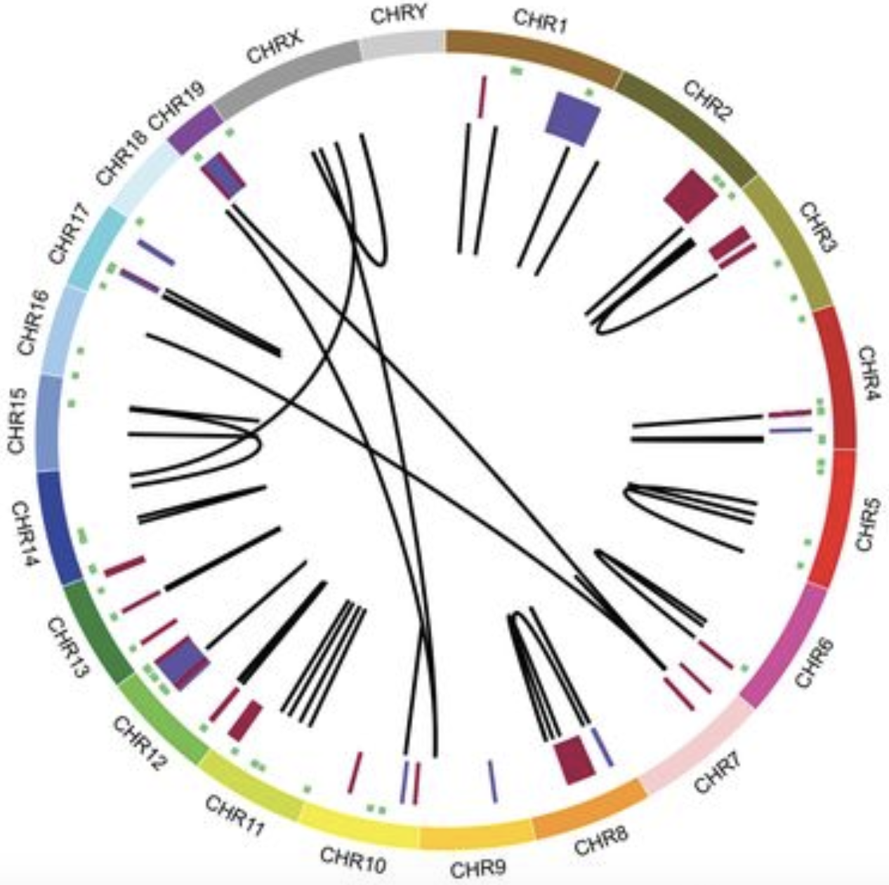
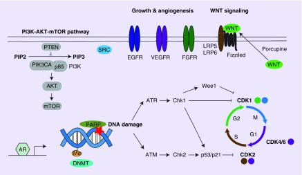

The Andrechek Lab is interested in the genomic events that regulate normal development, cancer initiation and progression. The focus of our research has been to integrate bioinformatics with mouse models of breast cancer to ask what mechanisms drive normal tissue to become cancerous. Current research is centered on the use of mouse models to explore how mutations regulate cancer.

Gene expression alterations in cancer models
We are interested in the events regulating gene expression in mouse models of breast cancer. This is being explored across models in a bioinformatic approach.
Over the past several years we have established a research focus on analyzing mouse models of breast cancer in the context of how they mirror human breast cancer. Our initial work (Development 2008) characterized how signaling pathways were differentially activated during the stages of normal mammary gland development and function. We then noted that there was significant histological heterogeneity in the tumors that arose in the Myc genetically engineered mouse model (PNAS 2009). Combining the Myc tumor data with 26 other genetically engineered mouse models in a large database revealed significant heterogeneity across all mouse models. In addition, this database permitted a critical comparison between the mouse models and human breast cancer (Breast Cancer Research 2014). We recently followed up on this by examining predicted copy number gain and loss events across the database of mouse models of breast cancer. Importantly, this analysis revealed similarities in amplification and deletion events in mouse models and human breast cancer (J Mam Gland Biology and Neoplasia 2017). We are in the process of adding additional genomic information to the characterization of these models and have uncovered additional findings for how engineered mouse models mimic human breast cancer. Genomic events that we have discovered are being explored with a new mouse model and CRISPR mediate knockouts in cell lines.

Events regulating breast cancer metastasis
Breast cancer commonly migrates to the lymph node, brain, bone and lungs. This metastatic spread of cancer is what ultimately causes patient mortality and is a focus on the research in the lab.
Our research into mouse models of breast cancer has allowed us to use bioinformatics to make predictions about what genetic pathways are required for development and progression of breast cancer. Testing these predictions through interbreeding genetic strains has resulted in the identification of a number of pathways that are crucial for progression of breast cancer to metastatic disease. For instance, we predicted a role for the E2F transcription factors in various models and observed that ablation of E2F1 or E2F2 resulted in a vast reduction in metastasis (MCB 2014 and Oncogene 2015). By integrating whole genome sequencing with gene expression analysis, we have identified a number of mechanisms that regulate metastasis and are currently exploring them in engineered mouse models, breast cancer cell lines and in human metastatic genomic data.

Identification of triple negative breast cancer drivers
Patients with triple negative breast cancer have tumors that lack estrogen receptor, progesterone receptor and HER2. A critical issue for these patients is the lack of targeted therapies and reliance upon chemotherapy. We are seeking to understand what drives the formation of these tumors.
With the various databases our team has assembled to examine mouse models of breast cancer, we are also uniquely positioned to use this data to generate testable hypotheses. One area that we have focused on is the opportunity to use these data to ask what drives triple negative (estrogen receptor, progesterone receptor and HER2 negative) tumor initiation and progression. This is a critical area of research since the majority of triple negative cancers are limited to chemotherapy. Even worse, these tumors predominantly occur in younger women and are more commonly observed in the African American and Latino populations. In comparisons of mouse models that mimic triple negative breast cancer to models that mimic the luminal subtypes, we have uncovered a number of potential drivers and modulators of cancer. To directly test these genes for oncogenic properties we use overexpression and knockout experiments in cancer cell lines and for the most promising candidates, we then progress to the generation of new mouse models.

Precision therapy for breast cancer
Research over the past two decades has highlighted how each and every breast cancer is a unique disease and there is no “one size fits all” cancer therapy. In preclinical work we are now examining how we can use bioinformatics to direct therapy.
When microarrays were first used to profile breast cancer it became starkly apparent that there were enormous gene expression differences from sample to sample in breast cancer. In the two decades following the first breast cancer microarrays, the research community has learned how to characterize the differences between the various tumors. With the vast amount of gene expression and other genomic data that has now been collected we have an opportunity to now use this data to develop therapy. In a proof of concept study, we have used gene signatures to determine which pathways are active in tumors, found drugs that targeted these pathways, and then treated preclinical tumor models with combination therapy to block tumor growth. This proof of concept work has been successfully extended into patient derived xenografts where we have successfully treated tumors using combination therapy (Oncogene 2017). Our current work is centered on determining how to treat tumors that are resistant to the initial and standard of care therapy.